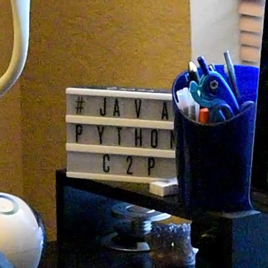

Hi! I'm Anas Saeed.
I am a student currently attending American High School. I spend a lot of my time enjoying various translated Japanese media, although this sometimes interferes with my school work. Sometimes, I wish that I had spent the time I used learning Java to learn Japanese instead so I don't have to rely on dodgy unoffical translations. Hopefully, one day I will be reborn into an alternative world... (okay I'm joking)

Things I'm interested in:
- Python
- Java
- Machine Learning
- Cooking (see blog [whenever I get that working {probably no time soon}])
- Anime
- Manga